Graphics
My Logo
Spring 2014. Edit: Fall 2015
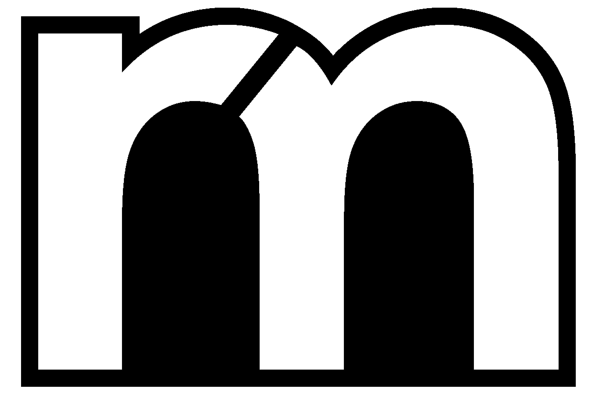
Student Orientation
Spring 2014
I worked in the Office of Student Experience and had the opportunity to design all the material for orientation for the incoming class of 2018. This included design brochures, posters, presentations, social media outburts, and the t-shirts featured below. The theme of the year was Infinity.


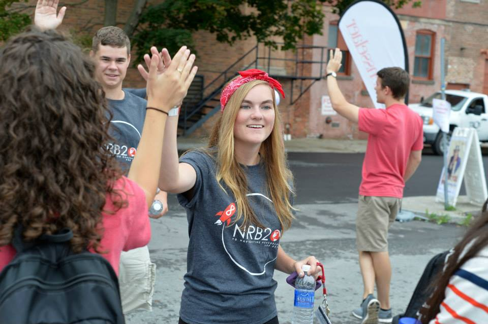
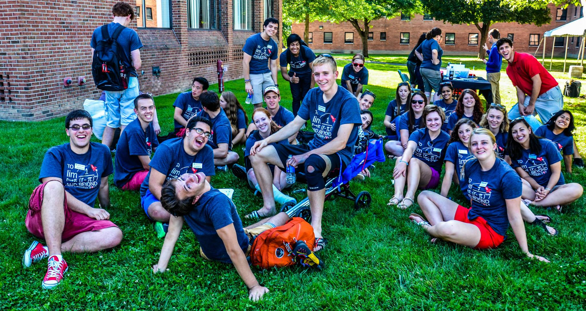
Knolling
Fall 2013
This project was completed in a group as part of the Studio III course. Our goal was to address the issue of being afraid to start something because it is a clean sheet of paper. We wanted to send the message to "just start."
Collaborators: Jeff Nasar, Evan Fouche, and David Rosenberg.

TALKS
Spring 2013-Now
TALKS is a by-students-for-students event that works to spark conversation amongst faculty, students, and the community at Rensselaer. I have helped since its inaugural year and create posters, presentations, and programs for the bi-annual event.
To see some of the speakers and more visit the TALKS webpage.

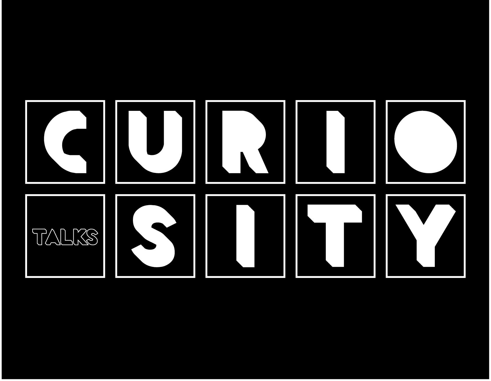
Elections 2015: Michael Han for GM
Spring 2015
I have designed the Elections posters for a few classmates since elections in 2013, however here I feature the campaign for a friend, Michael Han who ran for Grand Marshall (the person in charge of the student body). I created multiple poster designs, buttons, facebook images, business cards, and other party material.
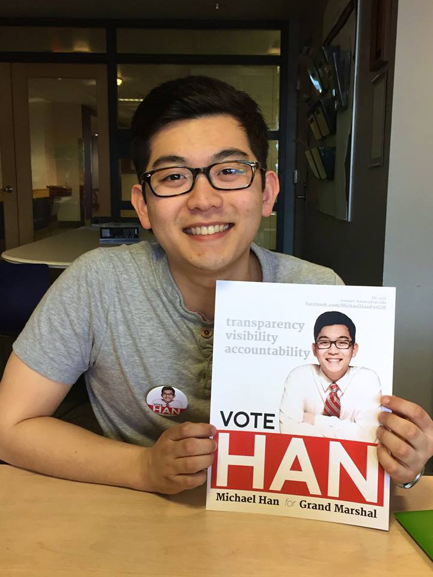
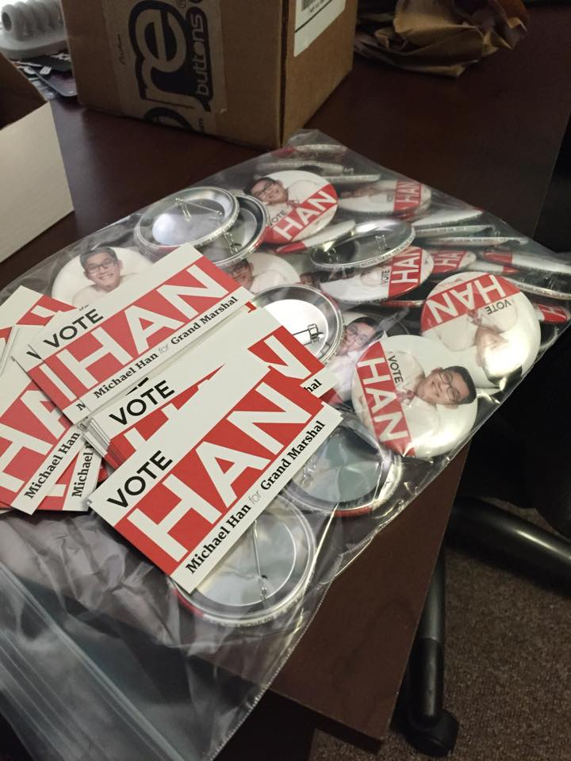
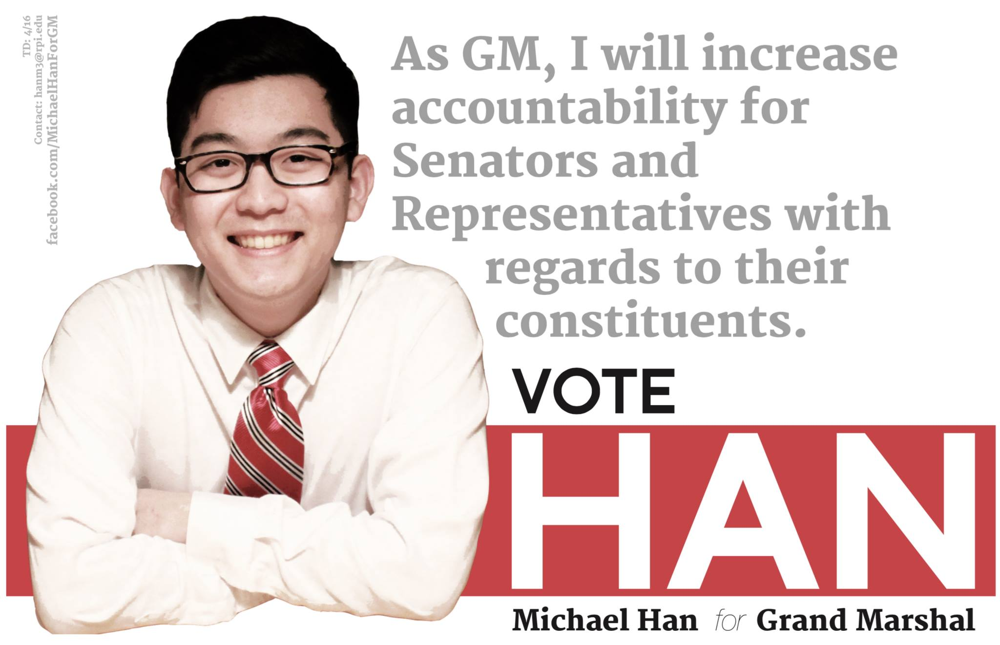
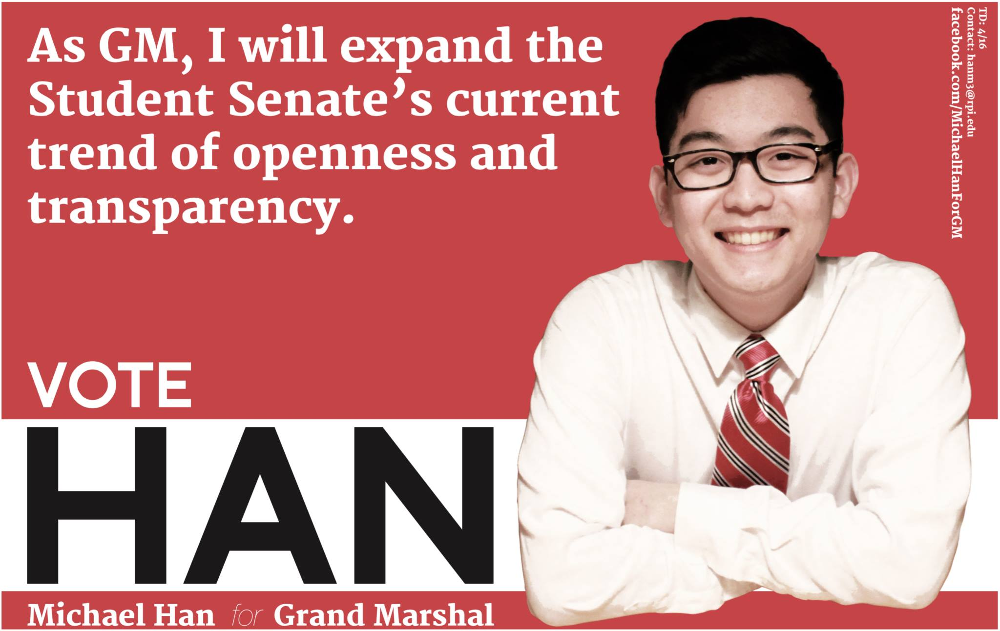
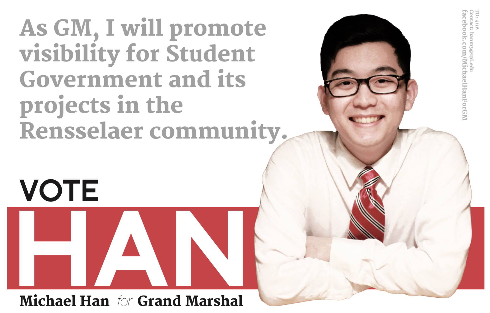
GM Week
Spring 2014
I worked on the design committe for Grand Marshall Week (the election week at Rensselaer). I created posters, calendars, and the annual GM Week Mug which is given out to the student body when you cast your vote on voting day.
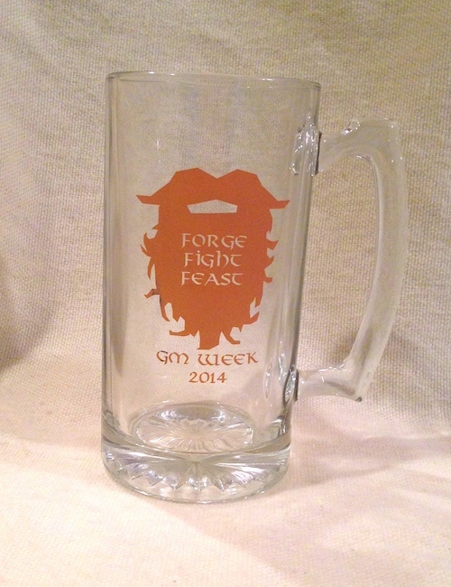


Color Me Red
Spring 2014
As part of the Class of 2016 Council, I designed the logo for a 1.16 mile long color run that we hosted. White t-shirts with the logo were worn by the runners who were covered in red as they ran the course around campus.

Design & Arts Housing
Spring 2014
As part of Studio VI, this logo for Design+Arts Housing was created along with plans for a studio space in one of the dorms. This logo ended up on the wall of the studio space.

Watermelon Bash
Fall 2014
This logo was designed for a fraternity's philanthropy event, Watermelon Bash. Lambda Chi Alpha's annual Watermelon Bash raises money for the Troy Unity House by having teams compete in watermelon themed events.
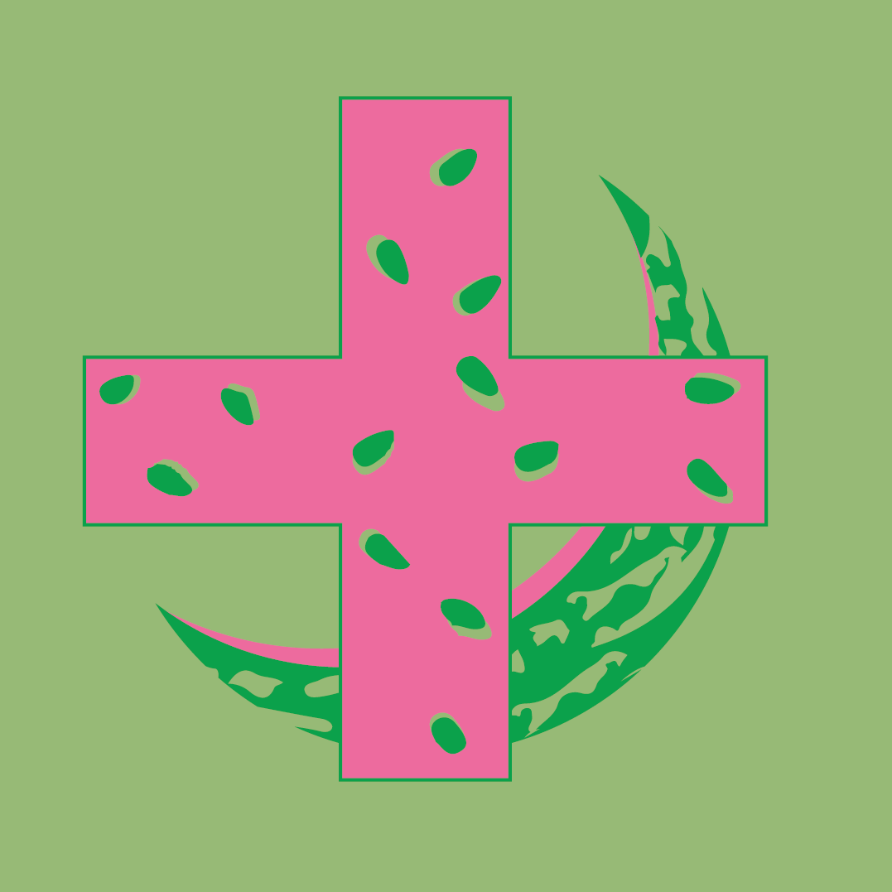
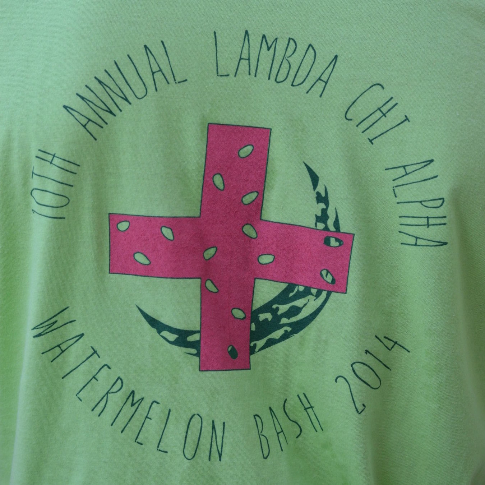